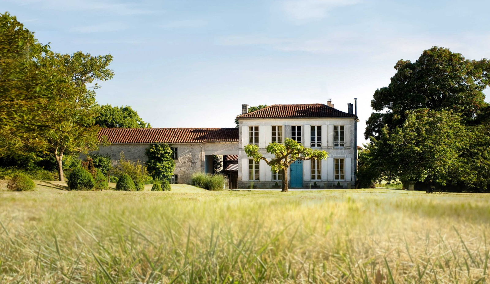
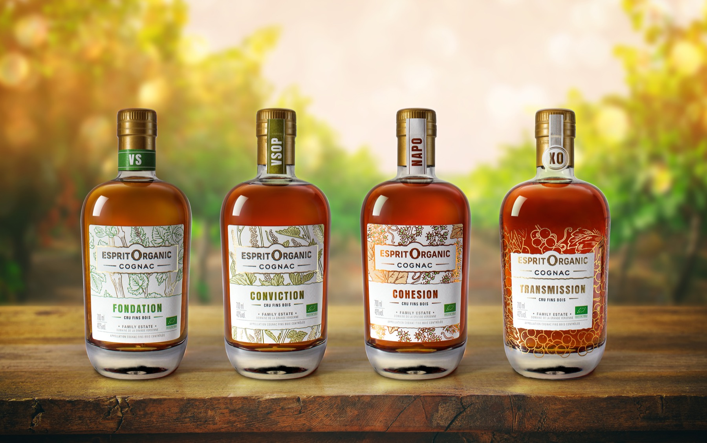

Wine estate
Domaine de la Grande Versenne
- Address30 rue d’Angoulême, 16200 Triac-Lautrait
- CertificationAgriculture biologique Europe
- Regulation(UE) 2018/848 [FR]
- Ecocert activitiesFarmer, manufacturer / preparer
Organic certification
A certified organic approach, clear and true to our land.
Organic commitment
Cognac Esprit Organic is supported by organic production at Domaine de la Grande Versenne and by a certified commercial structure, Maison des Pierres SARL.
The links below point to Ecocert and Annuaire Bio, public certification sources and directories consulted on 27 June 2026.

Wine estate

House and distribution
What this commits us to
Organic agriculture governs vine growing and controlled preparation stages. For a cognac, this requirement can be read through vineyard management, transformation, ageing, blending and administrative traceability.
We prefer commitments that are simple to verify: identified operators, Ecocert certification, declared organic activity and consistency between the estate, the house and the Cognac Esprit Organic range.
This transparency helps consumers, wine merchants and importers understand the reality of the approach.